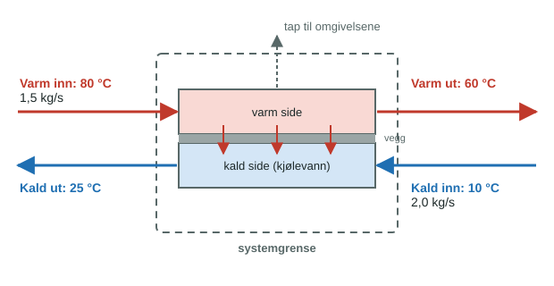
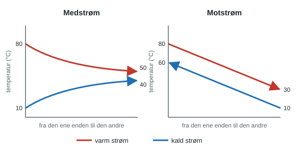

Energibalanse i en varmeveksler
I et prosessanlegg må varme produkter kjøles ned, og kalde strømmer må varmes opp. En varmeveksler flytter varme fra den ene strømmen til den andre. På denne siden regner du ut hvor mye varme som flyttes, og hvor mye som går tapt.
En varmeveksler har to strømmer som går på hver sin side av en vegg. Varmen går gjennom veggen fra den varme til den kalde strømmen, men strømmene blandes ikke. Hvordan varmevekslere er bygd, og hvilke typer som finnes, lærer du i Enhetsoperasjoner. Her regner vi på energien.
Du trenger formelen for varmeeffekt fra Varme og energi i prosesser:
\[ P = \dot{m} \cdot c \cdot \Delta T \]
Med massestrømmen \( \dot{m} \) i kg/s og \( c \) i kJ/(kg·°C) får du svaret i kW.
Energibalansen
Vi tegner en systemgrense rundt varmeveksleren, slik vi gjør i en massebalanse. Fire strømmer krysser grensen: varm strøm inn og ut, og kald strøm inn og ut.

Energi kan ikke forsvinne. Varmen den varme strømmen gir fra seg, må derfor havne et sted. Det meste går til den kalde strømmen, og resten går tapt til lufta rundt varmeveksleren:
\[ \text{avgitt varme} = \text{opptatt varme} + \text{tap} \]
Avgitt varme regner du ut med tallene for den varme siden, og opptatt varme med tallene for den kalde siden. På hver side er \( \Delta T \) forskjellen mellom temperaturen inn og temperaturen ut, regnet slik at svaret blir positivt.
Dette gjelder når driften er jevn, altså når temperaturene ikke endrer seg.
En godt isolert varmeveksler har lite tap. Da kan vi regne som om tapet er null. Avgitt varme er da like stor som opptatt varme. Det gjør at vi kan finne én ukjent størrelse, for eksempel en temperatur vi ikke har målt.
Oppgave: Et produkt skal kjøles i en varmeveksler. Produktet har samme spesifikke varmekapasitet som vann. Det kommer inn med 1,5 kg/s og 80 °C. Kjølevannet har 2,0 kg/s og varmes fra 10 °C til 25 °C. Hvor stor varmeeffekt tar kjølevannet opp, og hvilken temperatur har produktet når det går ut? Vi ser bort fra tap.
Løsning:
- Opptatt varme (kald side): \( \Delta T = 25 \text{ °C} - 10 \text{ °C} = 15 \text{ °C} \)
\( P_\text{kald} = 2{,}0 \text{ kg/s} \cdot 4{,}18 \text{ kJ/(kg·°C)} \cdot 15 \text{ °C} = 125{,}4 \text{ kW} \) - Uten tap er avgitt varme like stor: \( P_\text{varm} = 125{,}4 \text{ kW} \).
- Finn temperaturfallet på varm side. Formelen snudd blir \( \Delta T = \dfrac{P}{\dot{m} \cdot c} \):
\( \Delta T = \dfrac{125{,}4 \text{ kW}}{1{,}5 \text{ kg/s} \cdot 4{,}18 \text{ kJ/(kg·°C)}} = 20{,}0 \text{ °C} \) - Temperatur ut: \( 80 \text{ °C} - 20 \text{ °C} = 60 \text{ °C} \).
Svar: Kjølevannet tar opp ca. 125 kW, og produktet går ut med 60 °C.
Legg merke til at produktet kjøles 20 °C, mens kjølevannet bare varmes 15 °C. Det er fordi det går mer kjølevann enn produkt. Den samme varmen fordeles på flere kilo, og da blir temperaturendringen mindre.
Oppgave: Operatøren måler på den samme varmeveksleren. Alle tall er som i eksempel 1, men produktet går ut med 58 °C, ikke 60 °C. Hvor stort er tapet?
- Avgitt varme (varm side): \( \Delta T = 80 \text{ °C} - 58 \text{ °C} = 22 \text{ °C} \)
\( P_\text{varm} = 1{,}5 \text{ kg/s} \cdot 4{,}18 \text{ kJ/(kg·°C)} \cdot 22 \text{ °C} = 137{,}9 \text{ kW} \) - Opptatt varme (kald side) er den samme som før: \( P_\text{kald} = 125{,}4 \text{ kW} \).
- Tap: \( 137{,}9 \text{ kW} - 125{,}4 \text{ kW} = 12{,}5 \text{ kW} \)
- Som andel av den avgitte varmen: \( \dfrac{12{,}5}{137{,}9} = 0{,}091 = 9{,}1 \,\% \)
Svar: Tapet er ca. 13 kW, eller ca. 9 % av varmen produktet gir fra seg. Er tapet mye større enn vanlig, kan isolasjonen være skadet. Mer om dette står i Varmetap og virkningsgrad.
Medstrøm og motstrøm
Strømmene i en varmeveksler kan gå i samme retning eller i hver sin retning:
- Medstrøm: Begge strømmene kommer inn i samme ende og går samme vei.
- Motstrøm: Strømmene kommer inn i hver sin ende og går mot hverandre. Figuren øverst på siden viser motstrøm.

Varme går alltid fra varmt til kaldt. Ved medstrøm kommer de to strømmene inn i samme ende. Der er forskjellen stor, men etter hvert som de går sammen gjennom varmeveksleren, nærmer temperaturene seg hverandre. Den kalde strømmen kan derfor aldri bli varmere enn den varme strømmen er når den går ut.
Ved motstrøm møter den kalde strømmen det varmeste produktet helt til slutt, rett før den går ut. Temperaturforskjellen mellom strømmene holder seg jevn langs hele varmeveksleren, i stedet for å bli liten mot slutten. Derfor kan motstrøm flytte mer varme med den samme varmeveksleren. De fleste varmevekslere i industrien er koplet i motstrøm.
Energibalansen regnes på samme måte for medstrøm og motstrøm. Det er bare temperaturene som blir forskjellige.
Forsøk: Energibalanse på skolens varmeveksler
Målet er å finne avgitt varme, opptatt varme og tapet, og sammenligne målingene med beregningen. Læreren viser hvordan varmeveksleren startes, og hvor målerne sitter.
- Start varmtvann og kjølevann, og vent til temperaturene har stabilisert seg (ca. 5–10 minutter). Først da er driften jevn.
- Les av de fire temperaturene og de to vannmengdene. Noter dem i tabellen.
- Regn ut avgitt varme, opptatt varme og tapet.
- Gjenta gjerne med en annen vannmengde, eller med strømmene snudd fra motstrøm til medstrøm hvis anlegget kan det.
| Måling | Varm side | Kald side |
|---|---|---|
| Temperatur inn (°C) | ||
| Temperatur ut (°C) | ||
| \( \Delta T \) (°C) | ||
| Vannmengde (L/min) | ||
| Massestrøm \( \dot{m} \) (kg/s) | ||
| Varmeeffekt \( P \) (kW) | avgitt: | opptatt: |
Sjekk først om måleren viser L/min eller m³/h. 1 liter vann veier omtrent 1 kg. For varmt vann er det litt under 1 kg, men forskjellen er bare 2–3 %. Del på 60 for å få per sekund. Eksempel: 12 L/min = 12 kg/min = 12 / 60 = 0,20 kg/s.
Spørsmål til rapporten:
- Hvor stort er tapet i kW og i prosent av avgitt varme?
- Hvor tror du tapet blir av? Kjenn forsiktig etter hvor varmeveksleren og rørene er varme.
- Får du noen gang et negativt tap, altså at kjølevannet tar opp mer enn varm side gir fra seg? Hva kan det komme av? Tenk på hvor nøyaktige målerne er, og om kjølevannet er kaldere enn lufta i rommet.
Rør, ventiler og varmeveksleren kan være så varme at du brenner deg. Ta på flatene bare der læreren sier det er trygt, og bruk hansker ved behov. Varmeveksleren står under trykk. Åpne aldri en kopling, et lokk eller en luftskrue før anlegget er stengt, trykkavlastet og kjølt ned. Varmtvann på over ca. 60 °C gir skåldeskader på kort tid.
Test deg selv
1. Hva sier energibalansen for en varmeveksler?
- Den kalde strømmen tar alltid opp mer varme enn den varme strømmen gir fra seg.
- Avgitt varme er lik opptatt varme pluss tap.
- Temperaturen inn er lik temperaturen ut.
Energi forsvinner ikke. Varmen fra den varme strømmen går enten til den kalde strømmen eller ut til omgivelsene som tap.
2. 1,0 kg/s kjølevann varmes 10 °C i en varmeveksler. Hvor stor varmeeffekt tar det opp?
- 4,2 kW
- 42 kW
- 418 kW
P = 1,0 kg/s · 4,18 kJ/(kg·°C) · 10 °C = 41,8 kW ≈ 42 kW.
3. Den varme siden gir fra seg 100 kW, og kjølevannet tar opp 92 kW. Hvor stort er tapet?
- 8 kW
- 92 kW
- 192 kW
Tap = avgitt varme − opptatt varme = 100 kW − 92 kW = 8 kW.
4. I hvilken koplingsmåte kan kjølevannet komme ut varmere enn produktet går ut?
- medstrøm
- motstrøm
- begge
Ved motstrøm møter kjølevannet det varmeste produktet rett før det går ut. Ved medstrøm nærmer temperaturene seg hverandre, men kjølevannet blir aldri varmere enn produktet ut.
5. Det går dobbelt så mye kjølevann som produkt gjennom en varmeveksler. Begge har samme spesifikke varmekapasitet. Produktet kjøles 20 °C. Hvor mye varmes kjølevannet uten tap?
- 10 °C
- 20 °C
- 40 °C
Den samme varmen fordeles på dobbelt så mange kilo. Da blir temperaturendringen halvparten så stor.
Ordliste
| Begrep | Forklaring | Engelsk |
|---|---|---|
| varmeveksler | Utstyr som overfører varme fra én strøm til en annen uten at de blandes. | heat exchanger |
| varmetap | Varme som går ut til omgivelsene i stedet for dit vi vil ha den. | heat loss |
| medstrøm | Koplingsmåte der begge strømmene i en varmeveksler går i samme retning. | co-current flow |
| motstrøm | Koplingsmåte der strømmene i en varmeveksler går mot hverandre. Den flytter mest varme og er vanligst i industrien. | counter-current flow |
Les mer
- Varme og energi i prosesser i dette temaet, om varmeeffekt og \( P = \dot{m} \cdot c \cdot \Delta T \).
- Enhetsoperasjoner, om hvordan varmevekslere er bygd.
- Neste side: Varmetap og virkningsgrad.
Om kildene: Teksten, eksemplene og figurene på denne siden er laget for dette nettstedet, og tallene er tenkte. Siden bygger på undervisningsopplegg i kjemiprosess- og laboratoriefag ved Sauda vgs, som er utarbeidet med utgangspunkt i blant annet Kjemien stemmer, Laboranten og åpne nettkilder.